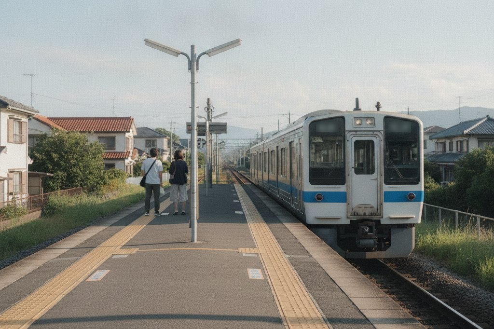
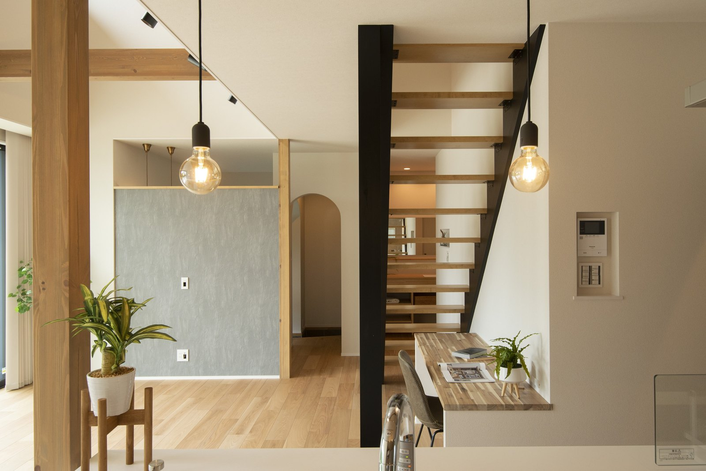

「職場は大阪のまま。家は奈良に建てたい」
そんなご家族が、ここ数年で確実に増えています。
今のお住まいは大阪や京都。
それでも奈良が候補に挙がるのは、なぜでしょうか。

吹き抜けと大きな窓で、広さ以上にゆとりが出ています。
通勤時間の目安。「意外と近い」が実感です

どの駅から乗るかで、毎日の時間が変わります。
まずは、いちばんの心配ごとから。
代表的な経路の目安です。
（乗り換えなし・日中の目安。時間帯で変わります）
4つとも、乗り換えはありません。
線の長さが所要時間です。目盛りは10分ごと、いちばん右が40分。
2026年9月時点の各社の時刻表による目安です。
大阪駅（梅田）へも、王寺から大和路快速で35分。
こちらも乗り換えはありません。
大阪市内を端から端へ通うのと
そう変わらない数字ではないでしょうか。
「奈良に住む＝遠距離通勤」ではありません。
沿線と駅を選べば、通勤時間はほぼ変えずに
住まいの条件だけを変えられます。
同じ予算で、家と土地の「余白」が変わります
次は、お金の話。
大阪市内や北摂の相場と比べると
奈良は同じ予算で確保できる広さが大きく変わります。
並列2台と自転車置き場まで。
「使う場所」になる洗濯物を干す。子どもが遊ぶ。
週末にバーベキューができる。
便利な住宅設備の予算に回せる。

敷地の前に、車を2台並べて停められます。

家具を置いても、床がこれだけ空いています。
奈良の坪単価は別の記事で詳しく書いています。
 奈良の注文住宅の坪単価坪単価に何が含まれているかは、
奈良の注文住宅の坪単価坪単価に何が含まれているかは、会社によって違います。
子育ての環境で選ぶ人が、実際いちばん多い
続いて子育ての環境です。
校区を選んで土地を探すご家族。
「子どもが走り回れる庭」を最優先にするご家族。
お客様の声にも、「子供が走っても怒らなくていい」
という言葉が何度も出てきます。
医療費の助成や子育て支援は
市町村ごとに中身が違います。
「どの市に住むか」で差が出るところです。
たとえば、大阪へ通いやすい3つの市町で
子どもの医療費を比べると、こうなります。
| 市町 | 通院の自己負担 （1医療機関につき月額） |
|---|---|
| 奈良市 | 小中高生 1,000円 未就学児 500円 |
| 生駒市 | 小中高生 500円 未就学児 負担なし |
| 王寺町 | 一律 500円 |
3市町とも、対象は18歳の年度末まで。
所得制限はありません。
調剤薬局の負担もありません。
※2026年9月時点。制度は年度で変わります。
土地の候補が絞れてきたら、最新の中身を一緒に確認しましょう。

この広さに手が届くのが、奈良で建てる良さです。
移住の支援制度もあります
奈良県と県内35市町村には、
東京圏からの移住者向けの支援金制度があります。
令和8年度は単身60万円・世帯100万円。
18歳未満のお子さまを連れて移る場合は
1人につき最大100万円が加算されます
（就業・起業などの条件があります）。
家づくりの補助金と合わせると、
受け取れる額が変わります。
年度で条件が変わるので
家づくりのタイミングに合わせて
最新を確かめてください。
申請のタイミングをまとめています。
よくあるご質問
今は大阪在住です。土地探しから相談できますか？
できます。
というより、通勤条件を先に教えていただくのが一番の近道です。
「◯◯駅まで徒歩◯分以内」が決まれば、
候補エリアは自然に絞れます。
奈良のどのあたりが大阪通勤に向いていますか？
大阪のどこへ通うかで変わります。
難波・本町方面なら、近鉄奈良線・けいはんな線の沿線。
天王寺方面なら
JR大和路線の沿線が候補になります。
同じ市内でも
駅からの距離で毎日の負担が変わります。
地名ではなく「駅と時間帯」で考えると
分かりやすくなります。
京都への通勤でも奈良はアリですか？
アリです。
近鉄京都線で京都駅まで直通があり
奈良市北部は京都通勤圏として選ばれています。
大阪ほど本数は多くありませんので
「帰りの時刻表」を先に確かめてください。

奈良の工務店シバサンホームで、初めての家づくりに伴走しています。大阪から移り住むご家族の土地探しも多数。モットーはスピード・誠実さ・楽しさ。